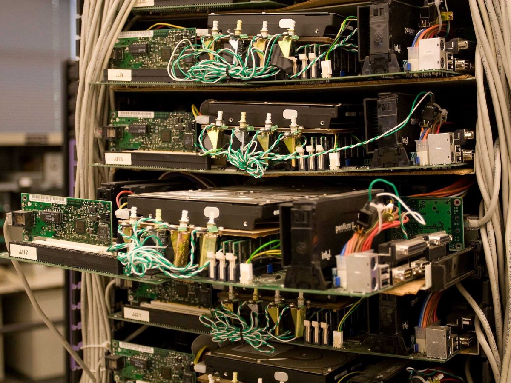

class: center, middle # Intro to Dev Ops --- ### A Brief History of Ops In the past, Hardware was: * Very expensive * Ran onsite in data centers * Required months of lead to planning and acquisition * Required significant expertise to configure, monitor, and maintain * Scaled vertically (bigger machines) ####This naturally led to an `Ops` team. * System administrators * Upgraded systems * Planned for capacity * Kept systems running --- ### A Brief History of Ops However, starting in the early 2000s computing began to change: * Computing began to scale horizontally (more machines) * New Way: If you needed more memory, CPU, etc. you added another machine. * (Old Way: If you needed more memory, CPU, etc. you threw away your current machine and bought a bigger one) Google's First Production Servers</img> --- ### A Brief History of Ops With horizontally scalable computing power, it then became possible to: * Build systems that can accommodate massive scale * Share / Rent your computational capacity to others ### In 2006, Amazon launched the EC2 and S3 product. * Amazon had developed significant computational power for serving Amazon.com * EC2 allowed you to rent a virtualized machine that ran on their infrastructure --- ### A Brief History of Ops Amazon EC2 (and similiar products) were the start of Cloud Computing. Cloud Computing was a game changer because: * Virtualized computers could be rented from systems that scale horizontally. * Virtualized computers are on demand. * Virtualized computers are cheap because they use commodity hardware. * Virtualized computers are hands off because they run in a remote data center. * Virtualized computers are (relatively) easier to configure as a single machine. * Virtualized computers have APIs which means that you can write code to spin up a machine. --- ### DevOps puts the developer in the Operations Cloud Virtualized Computing made operations accessible to the developer. DevOps is a culture of developers working close to operations. This is good for the developer because: * You no longer have to wait on operations to provide hardware. * You can more easily identify bugs because you can exactly replicate a production environment. * You can design your systems for scalability from the beginning. --- ### DevOps in the Workplace Developers are encouraged to own the lifecycle of their application. * The app that you write locally needs to be deployable on a server. * The app that you write locally also needs to go through a series of checks: ** All tests need to pass. ** All linters need to pass. ** All security checks need to pass. * The app that you write locally needs to be able to scale under load. * When there is a problem with your app, you will need to be able to discover the issue. --- ### This Week You will be learning how to manage your app's pipeline. 1. Basic Operations - How to deploy an app on a remote server and troubleshoot issues. 2. Operations in a Cloud Environment - How to deploy apps that are secure and scale in the cloud. 3. Best Practices of Cloud Operations - How to make your deployed app as simple and reliable as possible. 4. Build Systems - How to build your project. 5. Continuous Integration / Continuous Deployment - Building the deployment pipeline for yor app. ---